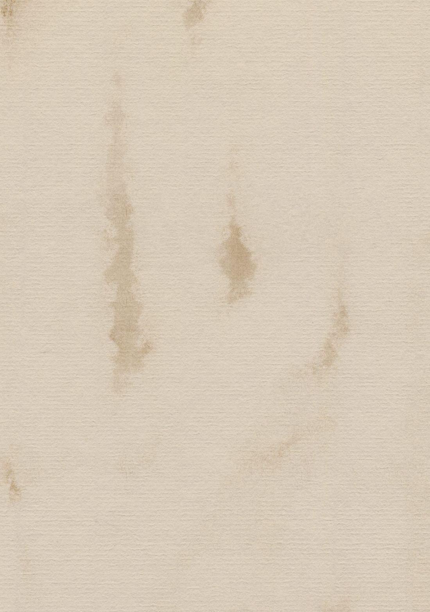
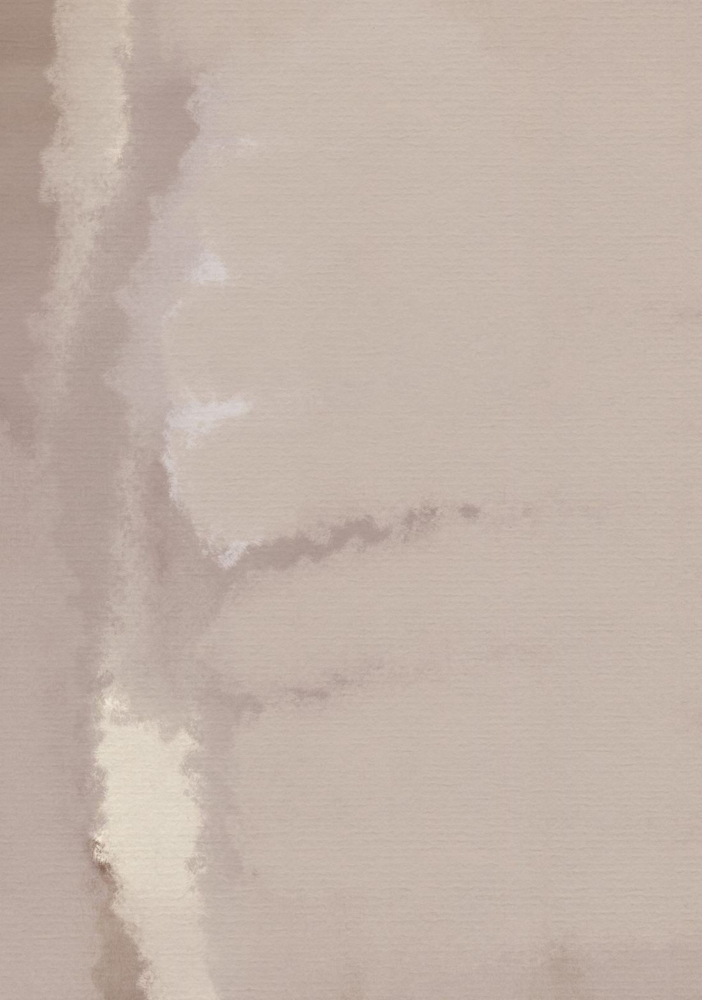

Hoy te das permiso de soñar. Imagina la vida que deseas, sin límites ni caminos trazados, y luego escríbela. Esa página será la semilla de todo lo que viene.
Reserva entre 30 y 50 minutosCuando estés lista, dale play.

Si te distraes, simplemente vuelve a la voz.
Esta escritura es el centro del recorrido: lo que escribas hoy te va a acompañar en las próximas sesiones. Hazla con calma y con toda tu atención.
Cuando termines la meditación, quédate un momento con lo que imaginaste. Luego toma tu libreta y escribe a partir de esta pregunta:
Si pudieras imaginar libremente la vida que deseas vivir, ¿cómo sería?
Escribe con todos los detalles que puedas. Estas preguntas pueden ayudarte a recorrer esa vida:
No tienes que responderlas todas ni en orden. Escribe sin preguntarte si es realista: entre más detalles aparezcan, más tendrás para descubrir en la próxima sesión.
Volver al recorrido